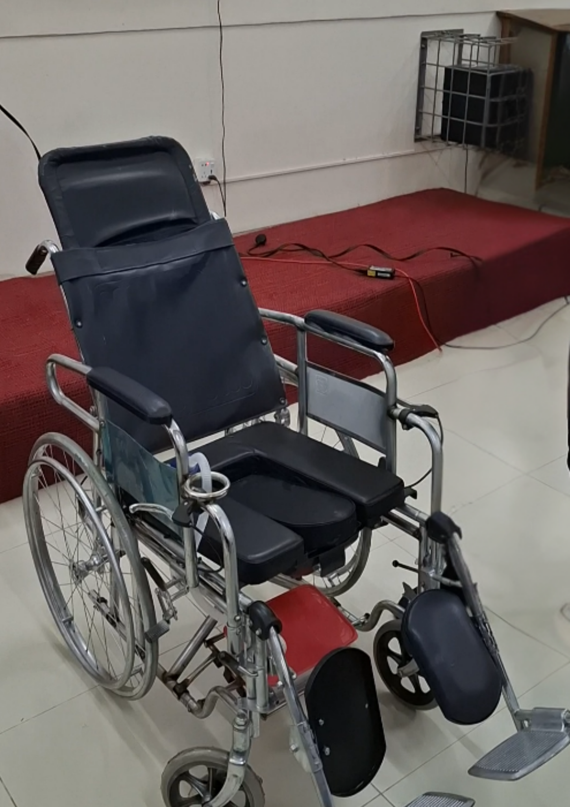
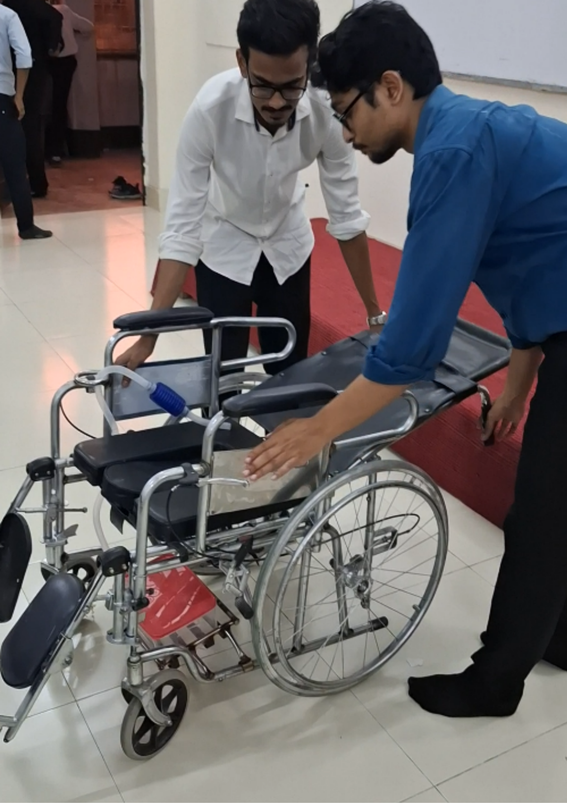
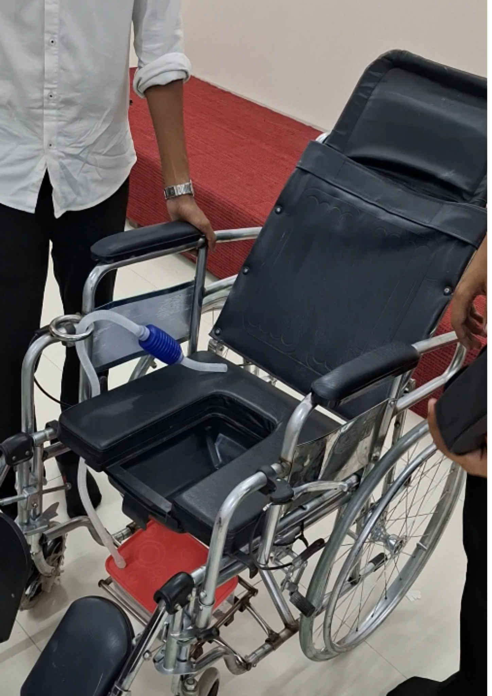

Product Design-II / Engineering design study
Wheelchair-Bed with Integrated Self-Cleaning System

Project Overview
Developed a multifunctional wheelchair-bed concept designed to improve mobility, comfort, hygiene, and independence for individuals with limited mobility. The proposed design integrates a 180° reclining mechanism, an inbuilt defecation system, and a water-jet cleaning system to address challenges associated with conventional wheelchairs and patient care. Conducted market research involving 105 respondents and applied engineering design methodologies, including the Kano Model, Quality Function Deployment (QFD), and competitor analysis, to translate customer needs into technical specifications. The project also involved 3D CAD modelling, structural stress analysis, material and manufacturing process selection, Bill of Materials (BOM) development, and cost feasibility analysis to evaluate the design's functionality, safety, and economic viability.
Project documentation
Full Project Report
Product Design-II | Final Project Report
If the document does not display in your browser, use View Full Project Report or Download PDF above.
Project Photo Gallery


